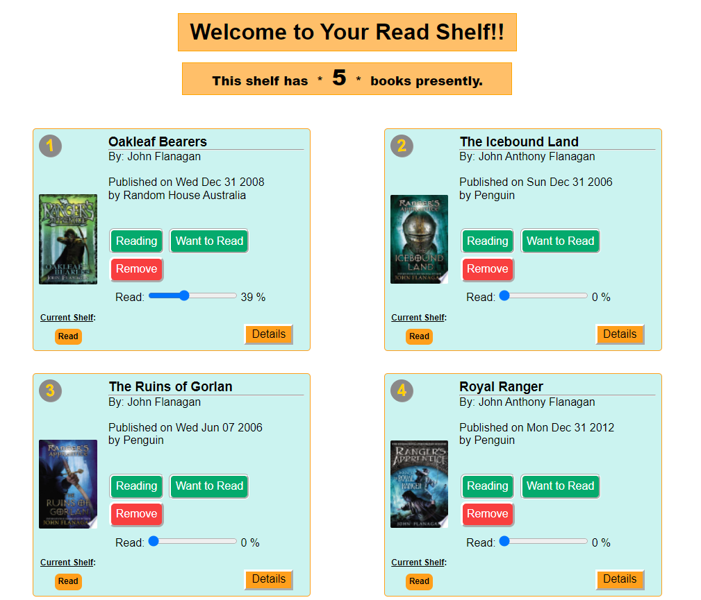

Example #1 Link
SleepOutside Project
Example #2 Link
CloudShelf Group Project
HTML5, CSS3, & JavaScript
6. developing and debugging HTML5, CSS3, and JavaScript programs that use medium complexity web technologies
1) Student can successfully build a dynamic web application using HTML, Javascript, and CSS.
2) Student applies mobile application design best practices in their applications.
3) Student can manipulate the DOM with Javascript
4) Student can effectively utilize event listeners with Javascript to handle user events.
5) Student is able to pull data from an external source (file or API) with Javascript.
6) Student makes some effort at organizing their code using objects, classes, modules, separation of concerns, or an architectural philosophy such as MVC.
7) Student makes effective use of CSS transitions/animations in their applications.
Throughout the course of this class I have applied myself with everything that I have. I have strived to soak up as much information as I can. I have read, studied, taken thorough notes, and practiced and applied what I have learned. I put a ton of effort into the SleepOutside project and the CloudShelf final group proeject. As a result I have gained all of the skills discussed in the question above. I am by no means an expert in all of these skills, but I have become fairly proficient in these skills.
Example #1 & #2
I think that my work in both the SleepOutside project and the CloudShelf final group project more than prove that I am able to successfully build a dynamic web application using HTML, JavaScript, and CSS. I applied mobile application design to our CloudShelf project, trying to build from the small version out. I manipulated the DOM with Javascript in tons of way in the CloudShelf group project and in the SleepOutside Project. I effectively used event listeners with JavaScript to handle user events of button clicks in both the SleepOutside project and the CloudShelf group project. I pulled data from an external source - the file for the SleepOutside project and Google Books API for the CloudShelf group project that was used to populate the important data for each site. I seperated and organized my code using objects, classes, modules, and keeping related areas of functionality together. Finally I used CSS transition, transform, and display none to animate the application with movement and modal pop-ups.